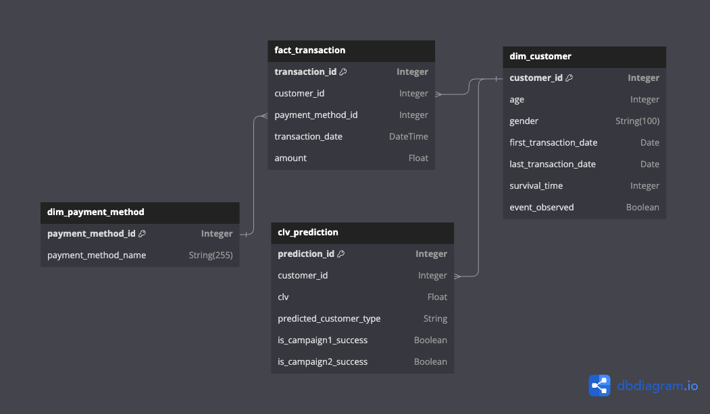

Internet Service Provider Database Documentation
Overview
This module is designed for managing and interacting with a database for an internet service provider. It includes a logging setup for tracking operations and a series of SQLAlchemy ORM classes for database interactions.
Database Models
Dim_Payment_Method
A dimension table for storing different payment methods.
payment_method_id(Integer, Primary Key): Unique identifier for the payment method.payment_method_name(String): Descriptive name of the payment method.
Dim_Customer
A dimension table for storing customer details.
customer_id(Integer, Primary Key): Unique identifier for the customer.age(Integer): Age of the customer.gender(String): Gender of the customer.first_transaction_date(DateTime): Date of the first transaction.last_transaction_date(DateTime): Date of the last transaction.survival_time(Integer): Duration between the first and last transaction.event_observed(Boolean): Indicates if an event (e.g., churn) is observed.
Fact_Transacation
A fact table for storing transactions.
transaction_id(Integer, Primary Key): Unique identifier for the transaction.customer_id(Integer, ForeignKey): Links to the customer inDim_Customer.payment_method_id(Integer, ForeignKey): Links to the payment method inDim_Payment_Method.transaction_date(DateTime): Date and time of the transaction.amount(Float): Monetary value of the transaction.- Relationships with
Dim_CustomerandDim_Payment_Method.
CLV_Prediction
A table for storing customer lifetime value predictions.
prediction_id(Integer, Primary Key, Auto-increment): Unique identifier for each prediction.customer_id(Integer, ForeignKey): Links to the customer inDim_Customer.clv(Float): Predicted Customer Lifetime Value.predicted_customer_type(String): Type of customer.is_campaign1_success(Boolean): Success of the first campaign.is_campaign2_success(Boolean): Success of the second campaign.
Here is database schema

Database Initialization
To create all tables in the database, run:
import runpy
runpy.run_module("clv.db.schema")
This will use the engine configuration to create tables as per the defined models.